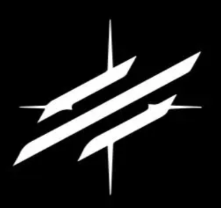
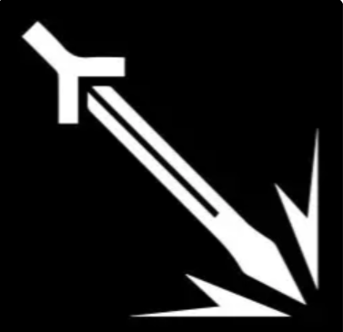
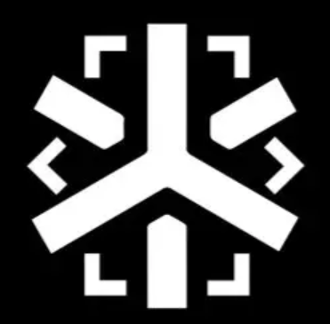
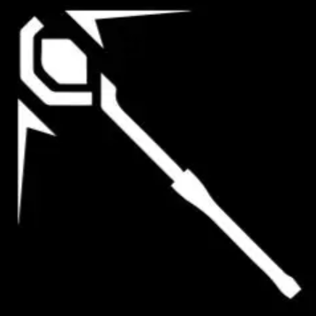
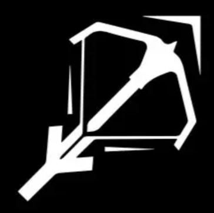
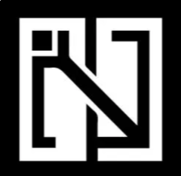

明日方舟是一款结合了塔防+战术策略+养成类游戏，虽然基本玩法更偏向塔防，相当于类似王国和部落冲突的各种塔防游戏。但在传统塔防 的基础上，引入职业体系和成本限制扩大了单纯的塔防游戏玩法，并通过各种策略将棋子放在合适的位置，防止敌方入侵，以获得关卡胜利。 |
||||
|  | 先锋：费用低、有回复部署费用的效果，可阻挡敌人。是 前期对抗敌人的主力之一，也是一般最先进场的职业。 |
 | 近卫：单体输出高、阻挡敌人，适合定点拦截 、单挑强敌、补充输出。 |
|
重装： 拥有强大的生命力和防御、阻挡数个敌人。放在 重 要位置阻挡敌人，配合输出击杀敌人。 |
 | 医疗：用稳定的治疗帮助先锋、近卫、重装续 航。 |
||
|  | 术士：对空、远程输出、强大的法术伤害，适合应对物 理防御力高的敌人，但自身生存能力一般，需要保护好。 |
 |
狙击：远程物理输出、可对空、费用相对术师来 说会低很多，同样需要保护。 |
|
|  | 辅助：强化队友作战能力或给敌人施加负面效果。 | 特种：可以击退敌人或把敌人拉近、还有快速复 活、隐匿等特殊能力。 |
|